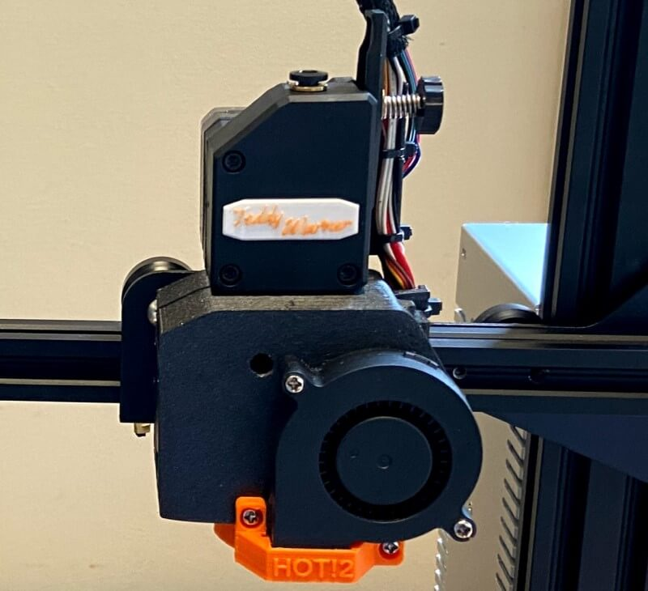
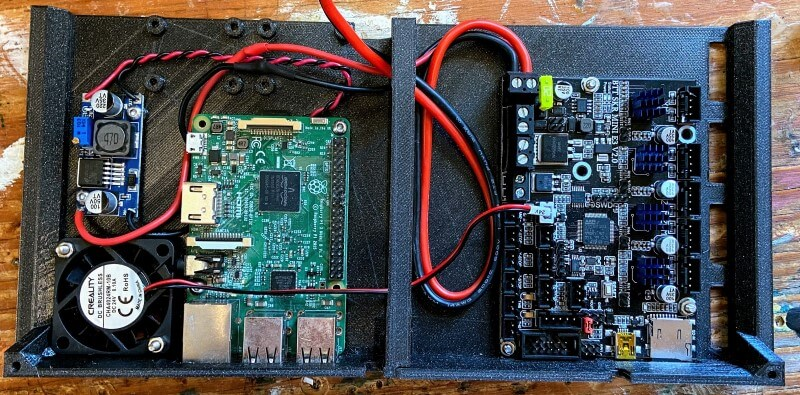
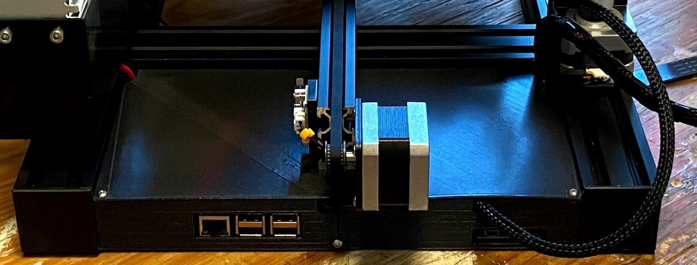
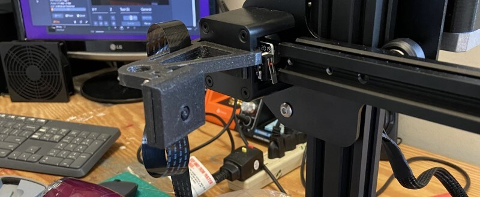
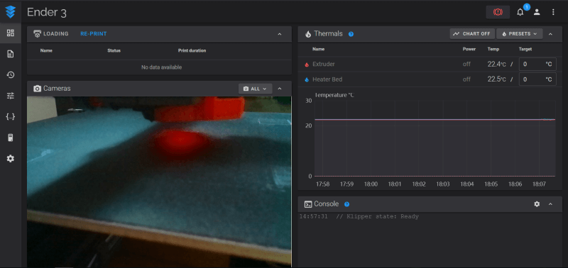
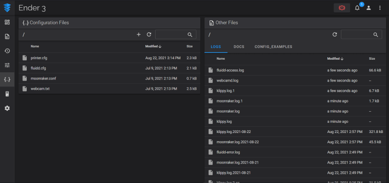

Klipper Enabled Ender 3¶
 Teddy Warner| Sophmore Year - 2021 | 10-12 minutes
Teddy Warner| Sophmore Year - 2021 | 10-12 minutes
Due to uncertainty surrounding lab access during the Covid-19 pandemic, I received an Ender 3 3D-printer at the start of my cycle in Fab Academy. During my second week in the course, I built and began to mod this machine as a little side project to the course work. However as the cycle progressed, I quickly ran out of time to keep working on this machine’s mods and moved the machine to my closet, where it sat up until the Klipper firmware piqued my interest. After modding the printer during Fab Academy1, I was running the machine on Marlin linked to Octoprint2, a setup I use on my other machines. This setup worked great with my machine mods, allowing me to print over a network through Octoprint as I would on any of my other Octoprint enabled machines. In this configuration, a Raspberry Pi running Octorpint hosts a local server that .gcode flies can be uploaded to and ran from. The Pi sends this uploaded .gcode to the machine’s mainboard, where the code is processed, and movements/operations are determined.
Klipper Opperation Principal
Klipper on the other hand operates on a different principle. The firmware runs across both the mainboard and the Raspberry Pi, allowing for the same type of hosted server to exist (I used FluiddPi as my servers GUI), but instead of relying on the machines mainboard to compute .gcode, the code parsing is done by the Raspberry Pi - the more powerful computer- leaving the machine mainboard to only worry about stepper movements and operations. This setup uses the given hardware of a setup more optimally, allowing for faster calculations and more precise movements.
After learning about the benefits of Klipper I knew I had to try it out and thus, the Ender 3 modding project was revied and pulled from the closet.
Ender 3 Modding¶
Before the installation of Klipper, here are all the hardware mods done to the machine. I upgraded the main bored from the original factory board to a SKR Mini E3 V2, and the original factory screen I switched out to a TFT35 Touchscreen. Following that I added a Bltouch for auto bed leveling, and switched the machine from Bowen to direct drive, with this Thingiverse design. I spent some time adding some customization to the machine as well, giving the direct drive system a little nameplate.

Finally, I moved all of the electronics of the machine to the rear of the machine using this Thingiverse design. This mod gave the space to add a raspberry pi and a means of power for it in addition to the mainboard, a perfect case for a Klipper-enabled machine.
 
I used this Thingiverse design to mount a raspberry pi camera to my printer’s x-axis as shown in one of the pictures below. All of these modifications were done with parts printed on my Prusa I3 Mk3S+, and electronics I had laying around, making these printer modifications only take around three days to complete, including the time it took to print the parts.


Klipper Installation¶
As mentioned in the introduction paragraph of this page, I settled on using FluiddPi as the GUI for this Klipper setup. As opposed to a more broadly know GUI like Octoprint, FluiddPi offers some features that work directly with Klipper that make the entire experience pretty seamless. FluiddPi in addition to containing the servers GUI also packages Klipper & Moonraker into the software image, making the install of Klipper super straightforward.
Beginning the installation of Klipper, the first step is to download and flash the latest FluiddPi image (linked above). This Pi image can be flashed as you would with any other Raspberry Pi project - I use balenaEtcher for flashing, its simple 3-step interface makes the process super straightforward. After a successful flash of this image on your Pi’s SD card configure your WiFi information in the fluiddpi-wpa-supplicant.txt located on the flashed SD card (If you’re using wired internet, you can skip this setup). Then, you can install your flashed SD in your Pi and boot.
Next, some basic Pi config. Make sure you are on the same WiFi network you set up your Pi on, and then SSH into your booted Pi at the IP fluiddpi.local with the Pi’s default credentials (Username - pi / Password - raspberry). I use Putty as my SSH client as again, it’s pretty straightforward to use. Once connected to your Pi, run the command …
to open the configuration GUI. Here you can change your Pi’s credentials (highly recommended), set up your local timezone (to allow for accurate machine ETAs), and change your machine’s hostname (thus changing the URL from the default fluiddpi.local to YOURHOSTNAME.local). After all, changes, reboot your Pi and then confirm all software is up to date with the lines
Congrats!
You have now successfully set up FluiddPi on your Raspberry Pi, and can now connect to its web server with the URL http://fluiddpi.local ( or if you changed your hostname, with the URL http://YOURHOSTNAME.local).

Upon connection, the webserver will throw an error with a lack of a printer.cfg file. This file is your machine config file. Notably different from Marlin, Klipper does not require a machine to be specified before the flash but instead looks to this printer.cfg file for machine configuration. One of the benefits of using FluiddPi for Klipper is the ability to alter this printer.cfg file and reboot the firmware right from the server’s GUI. The machine configuration for my Klipper Enabled Ender 3 is covered later on this page under the Klipper Configuration section, but for any other machines, preconfigured printer.cfg files can be found online.
Next up, building Klipper to for machines mainboard. SSH back into your Raspberry Pi (making sure to change your IP to match your altered hostname if you changed it) and run the commands …
to open the mainboard configuration GUI. Work through this interface with your mainboards information before running the command …
to build your set configurations. Now, connect your Pi and machine mainboard via USB and determine the connected serial port with the line
the report this line will yield provides the serial port that connects your mainboard to your Pi, take note of this.
Now, to begin the flashing, run the lines…
making sure to paste in the reported serial port where it says YOUR-SERIAL-PORT-INFORMATION-HERE. This will flash the built Klipper instance to your machine’s mainboard, and then begin communication between the two parallel boards.
Good Work!
Klipper is now installed.
Klipper Configuration¶
As mentioned prior, unlike the Marlin firmware, Klipper is not compiled for a specific machine. Instead, the firmware looks to a machine configuration file - printer.cfg. This file can be altered without the reflashing of the firmware, just a simple reboot, thus making machine tinkering and hardware swapping significantly simpler. This printer.cfg file can be altered in the FluiddPi web server interface, simplifying the configuration process even more.

As shown above, your printer.cfg file can be accessed in FluiddPi’s configuration menu. Due to Klipper’s ability to experiment with your machine config, my printer’s configuration is always subject to change, but included below is the latest machine config running on my Klipper Enabled Ender 3.
printer.cfg¶
| printer.cfg | |
|---|---|
1 2 3 4 5 6 7 8 9 10 11 12 13 14 15 16 17 18 19 20 21 22 23 24 25 26 27 28 29 30 31 32 33 34 35 36 37 38 39 40 41 42 43 44 45 46 47 48 49 50 51 52 53 54 55 56 57 58 59 60 61 62 63 64 65 66 67 68 69 70 71 72 73 74 75 76 77 78 79 80 81 82 83 84 85 86 87 88 89 90 91 92 93 94 95 96 97 98 99 100 101 102 103 104 105 106 107 108 109 110 111 112 113 114 115 116 117 118 119 120 121 122 123 124 125 126 127 128 129 130 131 132 133 134 135 136 137 138 139 140 141 142 143 144 145 146 147 148 149 150 151 152 153 154 155 156 157 158 159 160 161 162 163 164 165 166 167 168 169 170 171 172 173 174 175 176 177 178 179 180 181 182 183 184 185 186 187 188 189 190 191 192 193 194 195 196 197 198 199 200 201 202 203 204 205 206 207 208 209 210 211 212 213 214 215 216 217 218 219 220 221 222 223 224 225 226 227 228 229 230 231 232 233 234 235 236 237 238 239 240 241 242 243 244 245 246 247 248 249 250 251 252 253 254 255 256 257 258 259 260 261 262 263 264 265 266 267 268 269 270 271 272 273 274 275 276 277 278 279 280 281 282 283 284 285 286 287 288 289 290 291 292 293 294 295 296 297 298 299 300 301 302 303 304 305 306 307 308 309 310 311 312 313 314 315 316 317 318 319 320 321 322 323 324 325 326 327 328 329 | |
Slicer Configuration¶
Check out my Klipper Enabled Ender 3 machine profile page, linked below, for information regarding the slicer setup & config, as well as my profile download.